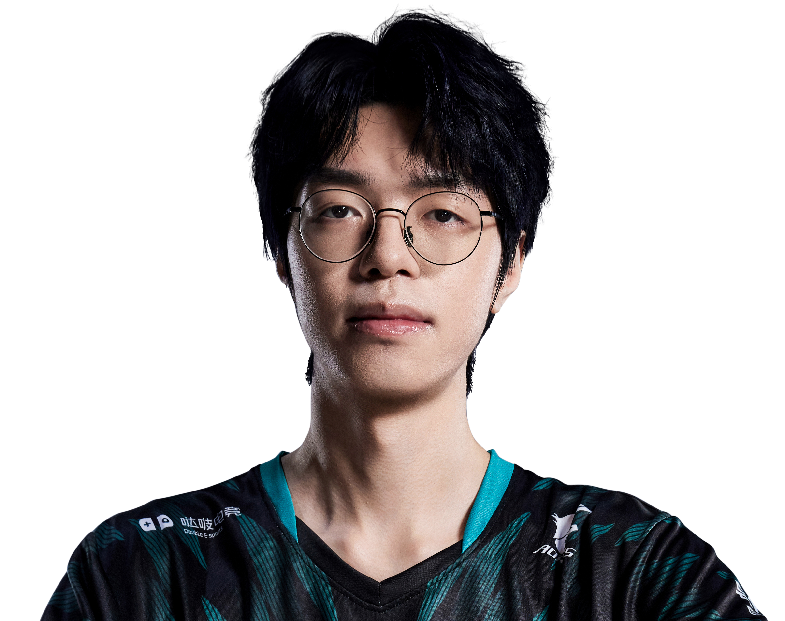

Dragon Ranger Gaming / Ilya Ushakov
vo0kashu.
ALL IN. EVERY ROUND.Cyphervo0kashu / Ilya Ushakov
vo0kashu / DRG
ONE NAME.EVERY ROUND.ALL IN.
Ilya Ushakov，Dragon Ranger Gaming。
从每次选下英雄，到每次站上赛场。
vo0kashu / 赛场影像MOMENTS
MOMENTS
THAT MATTER.
vo0kashu.
Dragon Ranger Gaming
每一瞬间，都是比赛的一部分。
Riot Games / 官方赛场影像
vo0kashu / 职业英雄池
DIFFERENT AGENTS.
SAME PLAYER.
从最熟悉的英雄，看到每一种打法。零
Cypher.
38% 全英雄使用占比
224职业出场地图
228.0平均战斗评分 ACS
1.25击杀 / 死亡 K:D
3,875总击杀
237首杀
VLR 全时期职业数据 · 2026-11-02 快照 · 出场单位为地图，使用占比不是胜率。查看原始统计 ↗
vo0kashu / 比赛记录ONE PLAYER.
ONE PLAYER.
EVERY ROUND.
591职业地图
10,189总击杀
1.26全英雄 K/D
VCT 26: CN Threshold Week 1 ⋅
GF
DRG / NOVA3 : 0+
VCT 26: CN Threshold Week 1 ⋅
SF
DRG / TEC2 : 0+
VCT 26: CN Threshold Week 1 ⋅
QF
DRG / FPX2 : 1+
VCT 26: CN Threshold Week 1 ⋅
Ro12
DRG / RA2 : 0+
VCT 26: CN Stage 2 Play-Ins ⋅
LR3
DRG / TE1 : 2+
最近已收录系列赛；生涯总计由全英雄表求和，K/D 为总击杀除以总死亡。

下一位 / DRG 阵容